Using Python II: Clean, Predict and Inform
School of Continuing Studies, University of Toronto
Common data issues:
- Inconsistent format (416-123-4567 vs. 4161234567)
- Incorrectly captured data (Toronot vs. Toronto)
- Concatenated data (TorontoON, A1A1A1ON)
- Irrelevant data (capturing age, but not birthdate)
- False data (fake birthdate, fake name)
- Incomplete data (John S. vs. John Smith)
- Missing data
- Wrong data type
Variable identification refers to understanding what is meant by each variable in your data set (population (of a country or city? sample?), abbreviations, acronyms). Build a data dictionary for your data set to ensure all stakeholders, and team members, are aligned.
Data should be organized such that it can be interpreted by statistical software:
- Each variable should have its own column
- Each observation should have its own row
- Each value should have its own cell
- Multiple tables should be joined by a column
Univariate asnalysis refers to understanding the distribution of each variable (Does the range make sense? Does the distribution make sense? Should there be negative values? Zeros? N/As? Is the data coded correctly?). Summary statistics can be used to review individual variables: mean, median, mode, range, standard deviation, variance. In addition, visualizing data helps. For distributions, consider histograms, and for time series – line charts.
A normal distribution follows the central limit theory which states that some independent factors influence a particular characteristic. When these independent factors contribute to the characteristic individually, their normalized sum tends to result in a Gaussian distribution (in other words, a normal distribution).
Bivariate analysis refers to understanding variables in pairs. This can be done through the use of a scatter plot to identify correlations.
Missing data refers to data points not available for a certain observation. In Python, they're typically denoted with NaN. This occurs when collection efforts are incomplete (e.g., a survey participants fills out 48/50 questions).
Missing data patterns:
- MCAR: Missing Completely at Random
- No pattern to define missing data
- Could occur because of technical errors / challenges, errors in data collection, or survey participants omitting information
- If an analysis is done using a person's postal code at work and home to determine commute distance, and someone did not know a work postal code, but no other relevant information has been collected (e.g., length of time at employer), this would be MCAR
- MCAR rarely results in biased outputs; therefore, it can be corrected by omitting incomplete records from the sample
- MAR: Missing at Random
- A pattern exists (i.e., the probability of an observation missing can be explained by the data available)
- It is impossible to prove that data is MAR, however one can demonstrate the likelihood of data missing based on individual responses (e.g., if individuals are less likely to remember, or a condition would trigger them not to respond)
- If we ask individuals in a survey to tell us the genre of the last movie they went to see and how long ago they went to the movies, there is a probability that respondents who have not been at the movies for over 6 months will not remember the genre of the last movie seen
- If data is MAR, it cannot be ignored
- MNAR: Missing Not at Random
- Data missing not at random is missing data with a pattern to the likelihood that a data element is missing that depends on the missing element
- If asking a person how many crimes they committed but got away with in the last year, they may choose not to respond due to the nature of the question
- Data MNAR poses serious problems with the analysis, as the relevant data is missing
Techniques for missing data:
- Drop observation
- Used for MCAR data
- Drop observations which have missing data
- Count the number of NaNs and determine if removing the observations would cause a significant impact to the sample size
- Rule of thumb: less than 10% of observations can be removed
- Mean/median substitution
- Used for MCAR data
- Substitute missing values with the mean of the field
- Be mindful of data stratification (e.g., age groups, postal code, etc.); use the groupby() function to segregate different observation groups
- Modeling techniques
- Techniques depend on developing a model for the missing observation based on the remaining data
Data cleaning (cheat sheet):
- Categorical data:
- Consistency in formatting (e.g., if you captured data about where someone lives and it’s in various formats like US, USA, U.S.A., you would need to create a consistent structure) - dictionary / str.contains() / str.replace()
- Pulling information from identifiers (e.g., let’s say you have product identifiers like ON879X and BC7687X - if the first 2 letters of the identifier reflect the province of origin, you should spike those out so you can use them for analysis) - str.contains()
- Filling in missing values - "Other" / mode
- Dropping missing values (if a column or row has too many missing values, drop it) - drop() + a threshold parameter for the minimum number of NON-missing values a row / column should have before it is dropped
- Create broader categories for detailed breakdowns (if you have many small groupings, consider putting them in an "Other" category)
- Names (if you have a full name for people, split by first and last name) - split() / rsplit()
- Numerical data:
- Check for negatives where negative numbers don’t make sense (e.g., negative nutritional values, negative salary, negative expenses)
- Check for 0s where 0s don’t make sense
- Check the maximum and whether it makes sense (e.g., age = 150 does not make sense)
- Use a boxplot to check outliers
- Check for normality using a histogram or distribution plot
- Check for missing values and impute them based on mean or median (median when the distribution is not normal); remember to stratify the data before imputing values, if possible, for example, by gender or another demographic data point - fillna() + of groupby() + transform(); if you have more than 10% missing values, consider deleting the column
- Check all descriptive statistics (standard deviation, mean, min, max, variance, range) to see if they make sense based on the problem - describe(); if your data has a large variance or standard deviation, perhaps, it makes sense to stratify further (e.g., if you are looking for information on first time home buyers and your age has a standard deviation of 10 and the mean is 35, you may be looking at multiple markets of buyers rather than first time home buyers - so you may want to look at the age range of 20-35 separately, then 36+ separately (presumably, these are upgrading buyers rather than first time))
Example 1: Data cleaning.Dealing with wrong data type: There are a few functions which can convert a column of data to a new data type. For example, to convert an entire data frame to a new data type, you could use astype() like this: df = df.astype(str). You could also use this function in a specific column, for example: df['column'] = df.column.astype(int). One of the most common data issues is a column which SHOULD be numeric, but is not. In addition to the above method, we could also use the pandas function to_numeric() which allows us to, at the same time, convert a column to a numeric data type and deal with any errors. Why do errors happen? In some cases, you may have a word in the place of a number for a certain entry. If this is the case, Python will automatically capture that entire column as "object". With the to_numeric() function, we can convert the column to numeric format and "coerce" errors - this simply means that we convert any non-numeric data to a Null value (missing value). We can then replace the missing value.Dealing with inconsistent data: Sometimes, data can be stored inconsistently. For example, in many free-form fields that capture customer data, if the format of how the data should be captured is not defined, people may enter it differently. In our data set, we can identify inconsistently captured data using the unique() function, or by looking for patterns. For this example, I will keep it simple. If we pull out unique phone numbers, we will see that we have four patterns: XXX-XXX-XXXX, XXXXXXXXX, XXX-XXXXXXX, XXXXXX-XXXX. Unfortunately, most data cleaning is quite manual (even with Python) so it will take some manual effort to complete. For this purpose, we are going to use RegularExpressions (the library is called re). This library allows us to work with text data quite easily. What we are going to do is define our patterns using the re.compile() function, then for each entry, we will look for these patterns and replace them with the pattern we want, which is: XXX-XXX-XXXX. To do this, we will use simply the join() function with some digit locations. The best way to apply a fix like this is by defining a custom function, and then applying it to a column (this is also a good way to automate data cleaning).Dealing with data mistakes: Sometimes we may have captured data using a free-form method and we can come across issues like spelling mistakes. As before, it will be a manual effort to identify such issues and I like to use the unique() function so I can quickly identify things like spelling mistakes. In this example, we can see that we have multiple versions of Charlottetown, Ottawa, Toronto, and Winnipeg. The easiest way to deal with such data issues is to use the str.replace() method. For each inconsistency, you will essentially identify all instances of the wrongful spelling and replace them with the correct spelling. This function can be applied directly to a series (or column) in a pandas dataframe, so you don't need to use a "for loop".Dealing with missing data: We have missing data points in 3 columns: Income, Credit Limit, and Marital Status. When we are dealing with categorical data, such as Marital Status, we can simply create a new category called "Other" or we can select the mode (most frequently occuring value) and replace missing values with it. For numerical data, the simplest way is to replace missing values with the mean or median. You can do this as the blanket mean / median of the column, or you can organize by some category - for example, group by Marital Status and replace the mean for single vs. divorced vs. married people.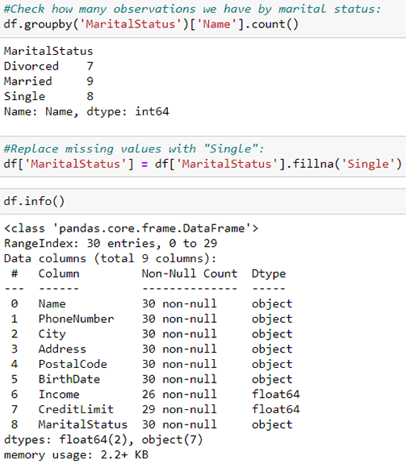Dealing with concatenated data: Our "Name" column seems to capture first, last, and in some cases, middle names. This may be okay, but in some instances we may be interested in splitting up the names. Since this is text data, we can use some string methods to do so. We can use str.split() or str.rsplit() for this: str.split() will split a string starting on the left hand side, while rsplit() will do so starting on the right hand side. The "n" parameter in this function tells it how many times to split (once, twice, and so on). In our case, we only need to split once, and we will use rsplit(). Why? Bacause in cases where we have middle names, we are going to record these as part of the first name. You need to watch out for and determine how to treat common name issues, like hyphenated names, middle initials, middle names, 2 last names, and so on.Dealing with irrelevant data: We have information about people's birthdates in this data set, but this isn't very useful if we don't have the age. Lucky for us, we can calculate age using the birthdate variable. We first have to convert the Birth Date column to a datetime value, and then check for issues (which we will fix manually). Once it's in the correct format, we can convert to Age.Creating categories of data based on text:
Example 2:
Identify the errors in province names.Create a dictionary object to change the wrongfully captured province names to the following format: ON, MB, QB, etc.Apply the dictionary to the "province" column.Fill in missing values in the "province" column with "Other".Convert the "net_worth" column to a numeric data type. Python doesn't recognize currency so you will need to remove the "$" and "," symbols from each value.
Example 3: Missing data.
Example 4: Assignment 1 (selected examples).
Create a new "Type of Cereal" column in your data frame by copying the "name" column. Write a function to replace the names of the cereal in your new column with one of these categories: Bran, Wheat, Fiber, Protein, Crunch, Corn, Nut, Rice, and Other.Identify the negative values in the data set and replace them with the median value for that column.Standardize the "weight" column to 1.Create a new column to categorize cereals as "healthy" vs. "unhealthy".Based on your newly prepared data set, identify what % of cereals that each manufacturer produces are healthy.Calculate the average, minimum, and maximum ratings for healthy vs. unhealthy cereals.Calculate the average, minimum, and maximum ratings for each type of cereal: Bran, Wheat, Fiber, Protein, Crunch, Corn, Nut, Rice, and Other.Create a stacked bar chart that shows how many of each type of cereal each manufacturer produces.Create a 3-dimensional scatterplot that shows the relationship between rating and calories; the 3-rd dimension should be reflected in the color of the dots and should highlight whether the cereal is categorized as healthy or unhealthy.Which shelf has the most healthy cereals?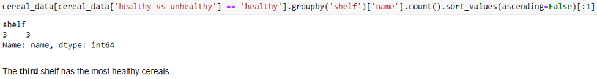
Once data is cleaned and missing values are addressed, we want to explore the data to understand the data set in advance of preparing a model. This includes understanding relationships between variables, data stratification, and using summary statistics to inform hypotheses.
Univariate analysis:
- Categorical data:
- Counts of categories - how many observations in each?
- What % of each category is represented in the data set?
- This information will help structure the bivariate analysis
- Continuous data:
- Mean, median, standard deviation, variance, min, max, range
- Understand spread and distribution of data using histograms
- View outliers using boxplots
Bivariate analysis:
- Categorical - continuous data:
- Group by category and calculate mean, median, standard deviation, variance, min, max, range by category
- Categorical - categorical data:
- Group by category and calculate count of secondary category
- Continuous - continuous data:
- Correlation coefficients
- Scatterplots to assess relationship
Time series patterns:
A trend exists when there is a long-term increase or decrease in the data. It does not have to be linear.
Seasonality occurs when a time series is affected by seasonal factors such as the time of the year or the day of the week or other calendar period (i.e., comparing only December across all years). Seasonality is always of a fixed and known period.
Cycles occur when the data exhibit rises and falls that are not of a fixed period. These fluctuations are usually due to economic conditions and are often related to the business cycle. Cycles are patterns of repeated increase and decrease of varying period.
Seasonal patterns have a fixed and known length, while cyclic patterns have variable and unknown length. The average length of a cycle is usually longer than that of seasonality, and the magnitude of cyclic variation is usually more variable than that of seasonal variation.
Exploratory time series analysis:
Step 1: Graph time series data to identify whether trends, cycles or seasonality (or a combination of these) exist. Use the time plot functionality from Pandas to identify trends. Time plots are used to plot observation values against the time of observations and joined by straight lines.
Most time series methods make an assumption of stationarity – meaning that a time series' statistical properties (mean, variance, growth rate) do not vary over time. The data is normal. This is also sometimes called white noise.
To analyze white noise data:
- Plot the data on a graph over time (line graph)
- Use the series summary to calculate basic statistics
- Calculate basic statistics for a smaller sample size
- Use a lag plot to assess stability
- Use an autocorrelation plot to detect portions of the time series which are not stationary
Step 2: Create a seasonal plot using Pandas. Seasonal plots are similar to time series, but they plot data against individual seasons. That is to say the same data is shown using a different time horizon or unit of time, creating simultaneous views of different time slices.
Step 3: Create a lag plot to compare time series data points against themselves with a fixed delay or sequence shift. This would help identify seasonality at a specific period of time.
Autocorrelation plot for multiple lags:
Forecasting is about predicting future events as accurately as possible. Predictions (in the form of a time series) are an important aid for effective and efficient planning. Often a key step is knowing when something can be forecast accurately, and when forecasts will be no better than random chance. Good forecasts capture patterns / relationships in the historical data, without replicating past events that are unlikely to reoccur.
Cross-sectional forecasting is an observational analysis from a population, or a representative subset, at a specific point in time. In contrast, time series forecasting uses only information on the variable(s) to be forecast and makes no attempt to discover additional factors which affect its behavior.
Prediction dependencies:
- how well we understand the factors contributing to the quantity
- how much data is available
- how past forecasts can affect future forecasts
Forecasting situations vary widely and methods can be very simple such as using the most recent observation as a forecast. Forecasting can be applied when two conditions are satisfied: historical data is available; it is reasonable to assume that some aspects of the past patterns will continue into the future.
The average method simply takes the average of historical observations and sets the future values as this average. A weighted average can also be used, by setting a predicted value based on the average of the last n observations.
The naive method simply sets all predicted values as the last observed value. This is often used in economic and financial time series forecasting. This only works for time series data.
The seasonal naive method sets all predicted values as the last observed value from the same season.
The drift method is a variation on naive where we extrapolate the trend by drawing a line through the first and last observations. The amount of change over time (called the drift) is set to be the average change seen in the historical data. This is equivalent to drawing a line between the first and last observation, and extrapolating it into the future. Unlike prior methods, this is an estimation of growth, rather than a future value. The growth estimate can then be applied to the last known value to obtain a forecast projection.
The purpose of adjustments and transformations are essentially cleaning up or preparing data, reducing noise, or correcting the context:
- Calendar adjustments refer to variation seen in seasonal data due to simple calendar effects (i.e., months don't have the same number of days). In such cases, it is usually much easier to remove the variation before fitting a forecasting model (i.e., re-calculate time series with a consistent time interval between measures).
- Population adjustments - any data that are affected by population changes can be adjusted to give per-capita data. That is, consider the data per person (or per thousand people, or per million people) rather than the total. For most data that are affected by population changes, it is best to use per-capita data rather than the totals.
- Inflation adjustments - data that are affected by the value of money are best adjusted before modeling. For this reason, financial time series are usually adjusted so all values are stated in dollar values from a particular year or known point of reference.
Exploratory data analysis (checklist):
- Use df.info() to check data types and issues with missing values
- Clean data
- Use df.describe() to understand key metrics for all numeric columns. This can be used to quickly understand ranges, standard deviation, mean, min, max and quartile data (indicator of skew)
- Conduct univariate analysis (explore each variable by itself) for numeric variables:
- Mean
- Median
- Min
- Max
- Range
- Count
- Sum (if appropriate)
- Plot histogram to look at the distribution
- Plot boxplot to identify outliers (remove outliers)
- Determine if data would be more meaningful if split into further categories / buckets
- Conduct univariate analysis for categorical variables:
- Mode
- Count by category (use groupby() for this)
- % by category
- Plot bar charts to view category split
- Determine if sample is representative or if adjustments are needed
- Determine if smaller categories can be grouped in one (e.g., "other")
- Conduct bivariate analysis for all numeric - numeric column combinations:
- Calculate correlation coefficients (df.corr() is useful)
- Plot scatterplots between numerical variables to check visibly for correlation or pattern
- Conduct bivariate analysis for all numeric - categorical column combinations:
- Group by categorical variables and calculate corresponding stats for numeric variables (mean, median, mode, max, min) - e.g., group by gender and calculate income stats - you can use aggregate() for this
- Conduct bivariate analysis for categorical - categorical column combinations:
- Group by categorical variables and count other categories - e.g., men vs. women in survived vs. not (Titanic)
- Group by multiple categorical variables and calculate numeric variables (e.g., group by gender and country of origin to calculate avg income)
- List all leads or major findings, and build models (regression, classification) to validate
Example 1: Data exploration.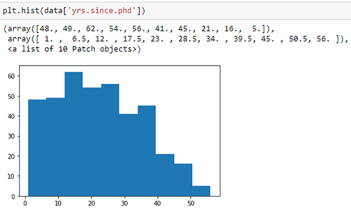
Example 2: Check a string and return any values that are in the string.
Example 3: Time series analysis.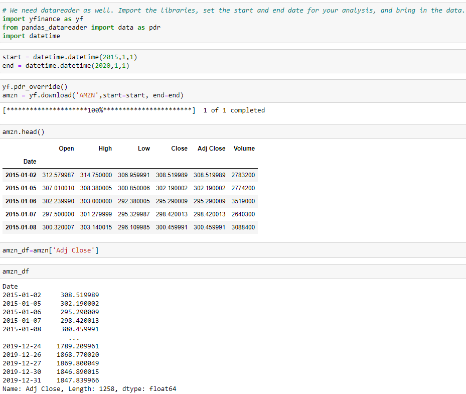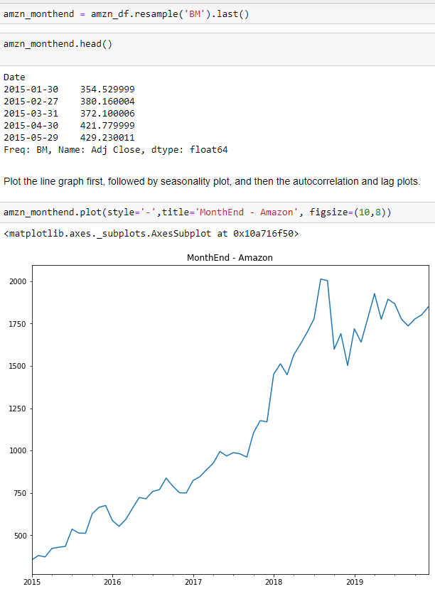
Example 4: Assignment 2 (selected examples).
Download the adjusted close prices for FB, MMM, IBM, and AMZN for the last 60 months.Resample the data to get prices for the end of the business month. Select the Adjusted Close for each stock.Use the pandas autocorrelation_plot() function to plot the autocorrelation of the adjusted month-end close prices for each of the stocks.Calculate the monthly returns for each stock using the shift() function. Use pandas autotocorrelation_plot() to plot the autocorrelation of the monthly returns. Combine all 4 time series (returns) into a single DataFrame, visualize the correlation between the returns of all pairs of stocks using the scatter_matrix() function from pandas.plotting.
Combine all 4 time series (returns) into a single DataFrame, visualize the correlation between the returns of all pairs of stocks using the scatter_matrix() function from pandas.plotting.
A linear regression model combines a series of parameters along with explanatory variables into a linear equation of the form:
The error term belongs in every regression model. Error term refers to the residual value (i.e., what is not explained by the equation).
The econometric view of regression is known as causal modelling, and sees the model development as an interaction between theory as expressed through mathematics and data through the statistics of regression: the mathematical model shows that the independent variables explain the behavior of the dependent variables (i.e., linear relationship); data is applied to the model to find the best fit. The objective of this approach is to find the model that best fits the data with as much of the variation as possible explained by the relationship (i.e., small error term).
The black box method is driven by algorithms that are highly automated. Techniques (e.g., ridge regression, lasso regression) do not leverage theory of causation but focus on managing tradeoffs between the number of explanatory variables used and amount of variation explained by the model.
The econometric approach requires more hands-on involvement, but allows for business knowledge to be considered when developing a theory. If the theory is correct, and independent variables are trustworthy in predicting dependent variable behavior, this model can be used for predictive and prescriptive analytics.
Some techniques in the black box approach are better for prediction (i.e., plugging in x-values to determine what could happen). If data to support a certain theory is unavailable, but a large amount of potentially relevant data is available, the black box method may be a better choice, as it can consider numerous models very quickly.
There are two packages which can be used for linear regression in Python: Statsmodels and Sklearn (called scikit-learn).
Interpreting regression results:
R-squared: this articulates what percentage of the variability in Y is explained by the model. This value will always be between 0 and 1; if R-squared = 1, then the model perfectly explains variability in Y, while if R-squared = 0, there is no linear relationship.
std err: this is the standard error of the coefficients. This measures the precision of the estimate of the coefficient.
P>|t|: to compute probability, it is assumed that the coefficient is 0 (there is no dependence). In other words, we assumed the coefficient is zero and under this assumption the probability to find the fitted value is P>|t|. The small value of P means that assumption about the coefficient being zero is not reasonable and should be discarded. Attributes with the P-value (column P>|t|) greater than 0.05 are not significant for this model. Attributes with values between 0 and 0.05 are statistically significant predictors of the response. In the given example, P>|t| for the Tobacco is 0.007, it has value much smaller than 0.05 and we accept the fit of the regression line.
95% confidence interval: the two last columns - [0.025 0.975] - give the confidence interval, that is, with 95% confidence the coefficient is between these limits.
F-statistic: assessment of the overall effectiveness of the model (i.e., does the combination of independent variables have a statistically significant impact on the output, or would the result be the same without them there?).
Building the best model:
- Where possible, use theory to inform your model development
- Maintain multiple data sets for developing, estimating, and testing
- Where theory is weak, or nonspecific, use data to inform the model specification
- When testing models, data permitting, over-specify them, which is to say, put in more variables than you need and test down rather than testing up
- Resolve issues of collinearity, particularly as a result of multiple potential specifications with multivariate tests
Feature engineering is the process through which you create new variables to help make your model more accurate, useful or simpler (features are any variables which are important in your model).
Types of features:
- Indicator variables represent special groups, classes or periods of time. Represented as dummy or binary variables (i.e., 1 is when observation belongs to a group, 0 when it does not). For examples, marking groups belong to Canada vs. US, or special times of year like Boxing Day or not.
- Interactions are combinations of variables in the dataset. For example, calculating profit by subtracting cost from revenues. In Python, create a new column to calculate a new variable.
- Feature representations make variables more useful. Examples include: combining sparse groups (e.g., small categories grouped as "other"), making variables more detailed (e.g., breaking down height by feet and inches), creating categorical mapping (e.g., grouping time of day by morning, afternoon or evening). These features are used for data that is difficult to model. In Python, you can use "where" statements to filter for certain values only, or you can use location indicators, or groupby().
- External data joins is the most flexible form of feature engineering. Joining multiple data frames or tables together to add more data. For example, adding simple data like Statistics Canada or Environics reports, or using APIs or other models to add more information to existing dataset (e.g., using Google Maps to translate coordinates into addresses, postal codes, and cities).
- Scaling data: data transformations (e.g., natural log or squaring a variable) can be used to improve a model. Used if certain patterns are identified in the data.
A dummy variable or indicator variable is an artificial variable created to represent an attribute with two or more distinct categories / levels. Regression analysis treats all independent (X) variables as numerical (e.g., interval or ratio scale). This means typically numerical values have a meaning (e.g., 10 is double the amount of 5). You may want to include an attribute or nominal scale variable, like Product Brand or Type of Defect (e.g., you have 3 types of products labeled "1", "2" and "3"; in this case, 3 minus 1 doesn't mean anything significant - this is a dummy variable).
Example 1: Model specifications.
Example 2: Feature engineering.
Example 3: Dummy variables.
Example 4: Data cleaning, exploratory analysis, and statistical analysis.
Example 5: Assignment 3 (selected examples).Create dummy variables for the Fuel_Type, Transmission, and Seller_Type variables. Create a new column that captures the age of the car as "new" or "old".Scale the Kms_Driven, Selling_Price, and Present_Price variables.Conduct exploratory analysis for the categorical variables.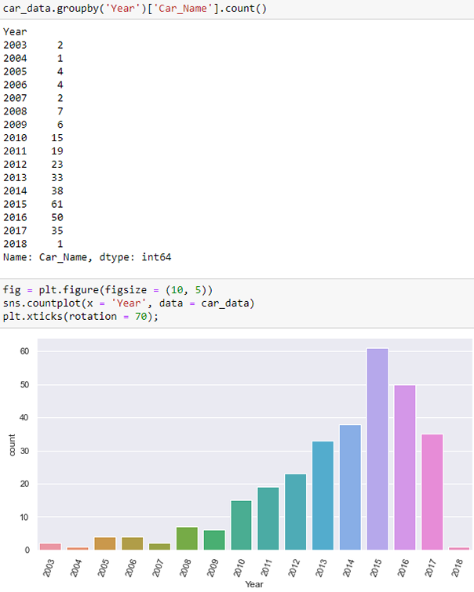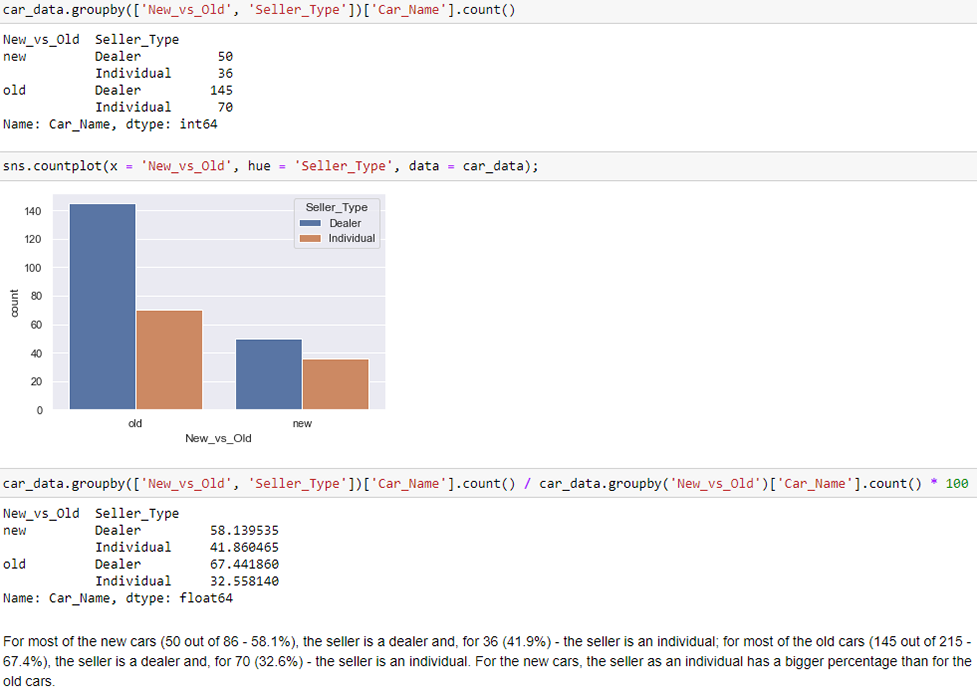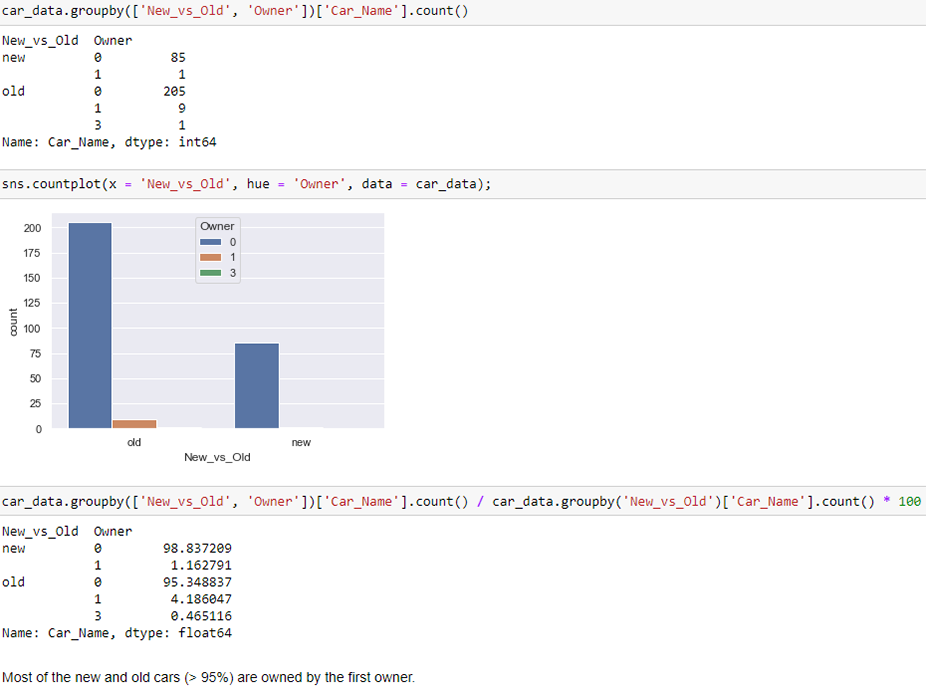Conduct exploratory analysis for the continuous variables.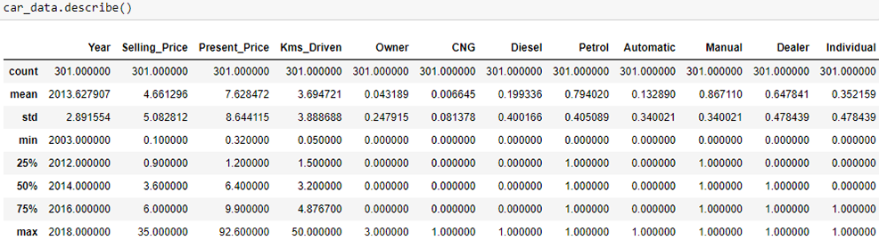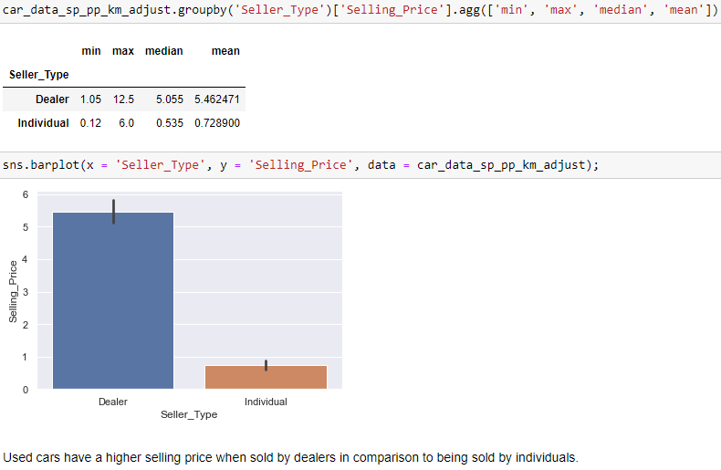Build a linear regression model.
Create a new column that captures the age of the car as "new" or "old".Scale the Kms_Driven, Selling_Price, and Present_Price variables.Conduct exploratory analysis for the categorical variables.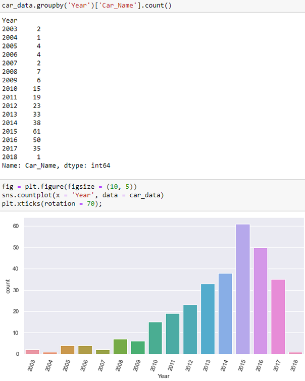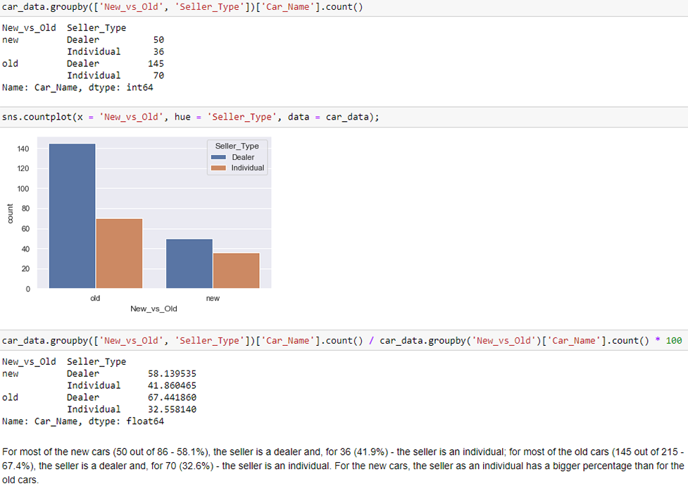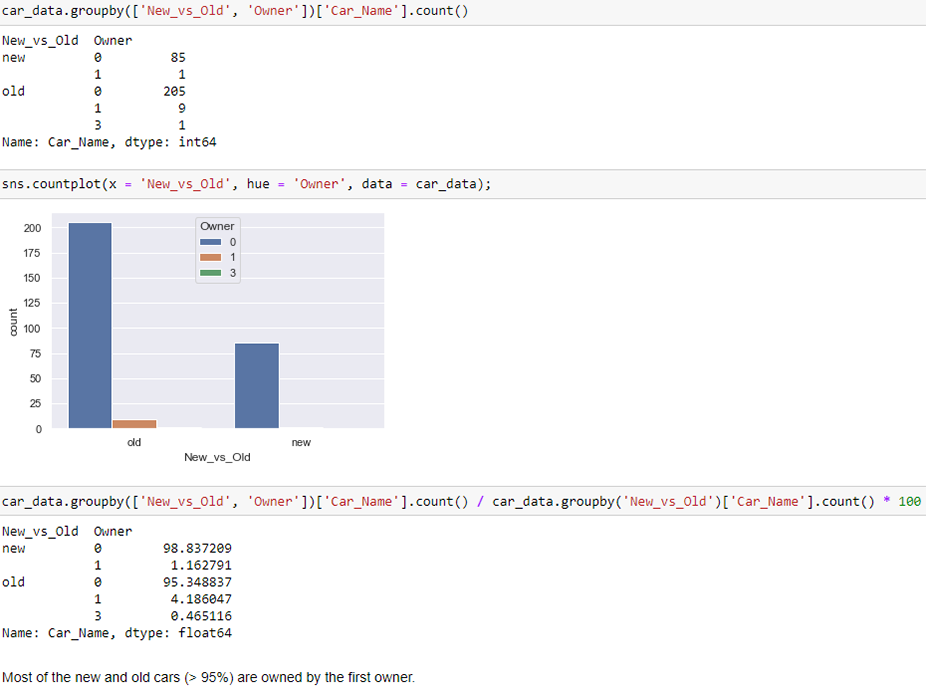Conduct exploratory analysis for the continuous variables.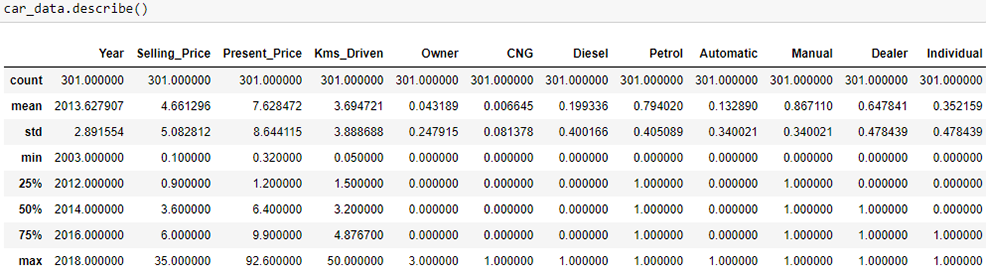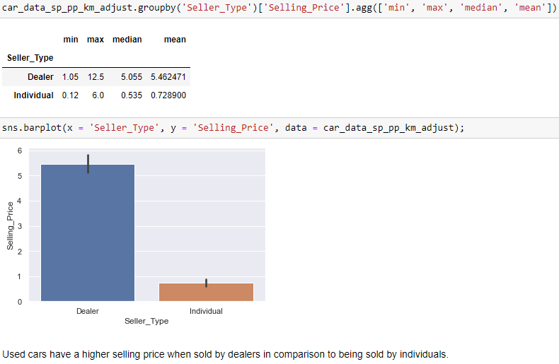Build a linear regression model.
The main purpose of statistics is to test a hypothesis, for example, testing that a drug is effective in treating headaches. A hypothesis is an educated guess about something in the world around you.
When proposing a hypothesis, it is customary to write a statement: if I do {X - independent variable}, then {Y - dependent variable} will happen. A good hypothesis statement consists of: "if" and "then" statement, both independent and dependent variables, testability by experiment, survey or other technique, based on information from prior research, and design criteria.
Hypothesis testing in statistics is a method of determining if the results of a survey or experiment are significant to prove the hypothesis. If the survey or experiments happened by chance (rather than the implemented change), then the experiment is NOT repeatable and therefore has little use.
Performing a test requires a null hypothesis. This refers to the already-accepted-fact. Testing will either prove or disprove the null hypothesis (i.e., accept or reject).
Example 1: Problem statement: A researcher thinks that if knee surgery patients go to physical therapy twice a week (instead of 3 times), their recovery period will be longer. Average recovery times for knee surgery patients is 8.2 weeks.
Hypothesis: H1: µ > 8.2
Null hypothesis: H0 µ = 8.2
The p-value is the probability of getting a result as extreme as the one we just calculate (i.e., getting the same result by chance). If the p-value is high, we accept the null hypothesis (i.e., our proposed change does not have significant impact on the outcome). If the p-value is small (below 0.05), we reject the null hypothesis (i.e., we've proven that the proposed change will significantly change the outcome on a repeatable basis). This is also what is meant by statistically significant.
Statistical tests (A/B testing):
- Standard t-test: this is the most basic type of statistical tests, which compares the means from exactly two groups (e.g., control group vs. experimental group).
- Paired t-test: a test to detect differences (i.e., before and after) where the same individuals are measured after the application of a treatment.
- One-Way ANOVA: similar to a t-test, except this test compares the means from three or more groups.
- Two-Way ANOVA: compares the means of two or more groups in response to two different independent variables.
Modeling assumptions:
- Linearity: the expected value of the dependent variable is a linear function of each independent variable, holding the others fixed (note this does not restrict you to use a nonlinear transformation of the independent variables; i.e., you can still model f(x) = ax2 + bx + c, using both x2 and x as predicting variables).
- Independence: the errors (residuals of the fitted model) are independent of each other.
- Homoscedasticity (constant variance): the variance of the errors is constant with respect to the predicting variables or the response.
- Normality: the errors are generated from a normal distribution (of unknown mean and variance, which can be estimated from the data). Note, this is not a necessary condition to perform linear regression unlike the top three above. However, without this assumption being satisfied, you cannot calculate the so-called "confidence" or "prediction" intervals easily as the well-known analytical expressions corresponding to Gaussian distribution cannot be used.
Visual tests to evaluate model:
-
Q-Q plot: a plot of the sorted values from the data set against the expected values of the corresponding quantiles from the standard normal distribution. If the null hypothesis is true, the plotted points should lie approximately on a straight line.
-
Residuals vs. fitted plot: a plot that tests the assumption of whether the relationship between variables is linear and whether there is equal variance along the regression line (i.e., homoscedasticity). The plot should be shapeless and symmetrically distributed around the 0 line.
-
Homoscedasticity (constant variance): the variance of the errors is constant with respect to the predicting variables or the response.
-
Scale-location plot: a plot to check the assumption of equal variance in errors. The plot should have a horizontal line with points spread randomly on either side.
-
Residuals vs. leverage plot: a plot to identify observations with high leverage (i.e., that may greatly influence the regression results). Observations outside the dotted red lines have high leverage and should be investigated.
-
Density plot: a plot that maps the residual values against a normal distribution. The plot should follow as normal distribution as possible.
The k-nearest neighbors, or k-NN, algorithm is one of the most widely used classification techniques. It is a part of the supervised machine learning family of algorithms. KNN algorithm analyses the entire dataset and determines the class of a new data point based on similarity measures (e.g., distance function). A new data point is assigned to the class which has the nearest neighbors around this new data point. k is the number of neighbors that the algorithm considers in the calculations. Usually, k is a small positive integer. If k = 1, then the object is simply assigned to the class of that single nearest neighbor.
Data privacy refers to the relationship between the collection and the use or disclosure of personal information. Personal information includes:
- Personal identifiers (name, address, account number)
- Behavior information (transactions, products purchased)
- Preferences and opinions (survey results, reviews)
- Ratings or assessments (credit score, customer rating)
- Attributes (health data, insurance claims)
All companies want to understand people better. Having more data allows companies to: customize products and services, influence customer product selection, increase customer loyalty, and anticipate customer behavior (good or bad).
The more data companies can collect and use, the faster innovation will be. This is good (customers can receive targeted service and products to fit their needs; interactions will be seamless, administrative burden will be reduced (e.g., ordering products each time)) and bad (companies will have a lot of power and influence over customer choices, companies may misuse data to invade privacy, companies can profit from using customer data).
10 principles of PIPEDA (Personal Information Protection and Electronic Documents Act):
- Accountability
- Identifying purposes
- Consent
- Limiting collection
- Limiting collection, use, disclosure
- Accuracy
- Safeguards
- Openness
- Individual access
- Challenging compliance
The goal of data security:
- Confidentiality: data is only used by the people who need it.
- Integrity: changes to data are only made by authorized users.
- Availability: data is available when needed by authorized persons.
Data management is the process of ingesting, storing, organizing, and maintaining all organizational data. Data governance is the oversight of data management practices.
Data management programs:
- Data quality (accuracy, formatting, timeliness)
- Metadata management (data about data: date recorded, last maintenance, who recorded the data, file size, etc.)
- Data lifecycle management (standards for storage and disposal of data)
- Master reference data (major groups of data to create a consistent reference point (e.g., customer data, operational data, etc.))
Data stewards oversee the implementation of data management practices in an organization.
Example 1: